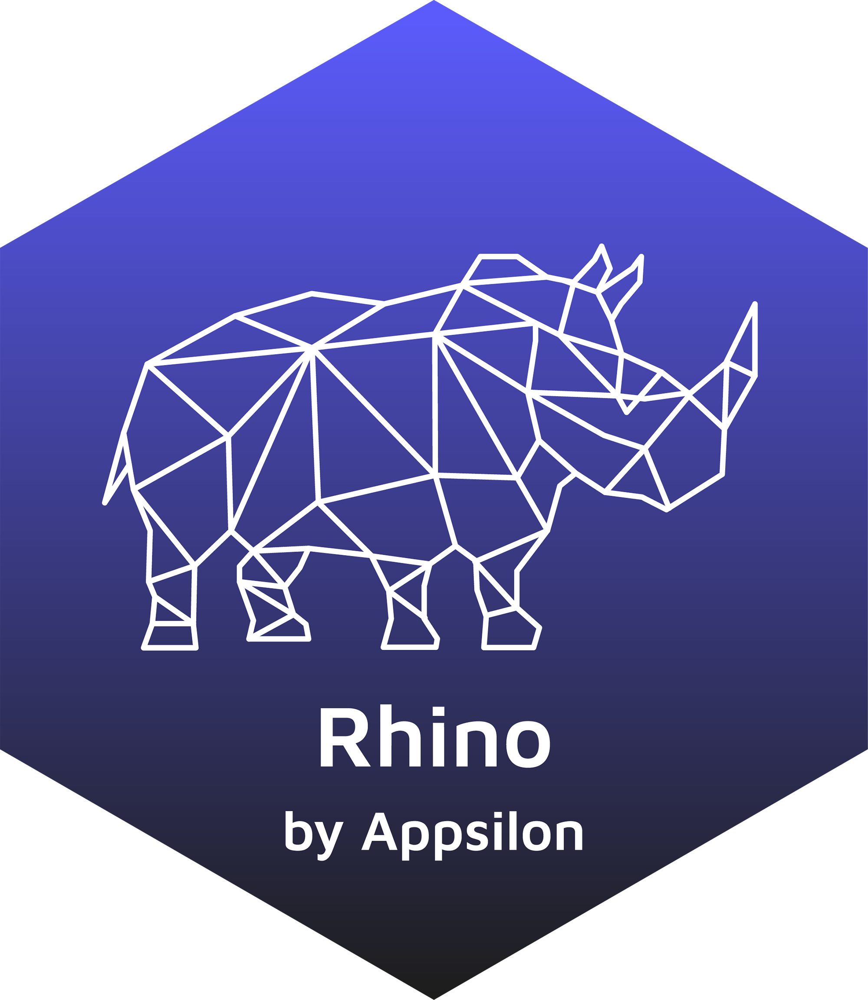

Rhino 
Build high quality, enterprise-grade Shiny apps at speed.
Why Rhino?
Rhino allows you to create Shiny apps The Appsilon Way - like a fullstack software engineer. Apply best software engineering practices, modularize your code, test it well, make UI beautiful, and think about user adoption from the very beginning. Rhino is an opinionated framework with a focus on software engineering practices and development tools.
Rhino supports your work in 3 main areas:
- Clear code: scalable app architecture, modularization based on Box and Shiny modules.
- Quality: unit tests, E2E tests with Cypress, logging and monitoring, linting.
- Automation: project startup, CI with GitHub Actions, dependency management with renv, configuration management with config, Sass and JavaScript bundling with ES6 support via Node.js.
These features are often implemented using well-known packages. Rhino brings them all working together out of the box!
Read more: What is Rhino? and Similar projects.
Get it
Stable version:
install.packages("rhino")Development version:
remotes::install_github("Appsilon/rhino")Usage
- Create a new Rhino application with
rhino::init() - To learn more, follow the Rhino tutorial
- To migrate an existing application to Rhino, refer to
rhino::init()details section
About
Rhino is distributed under LGPL-3.0 license. Developed with ❤️ at Appsilon.
Appsilon is the Full Service Certified RStudio Partner. Learn more at appsilon.com.
Get in touch: opensource@appsilon.com.